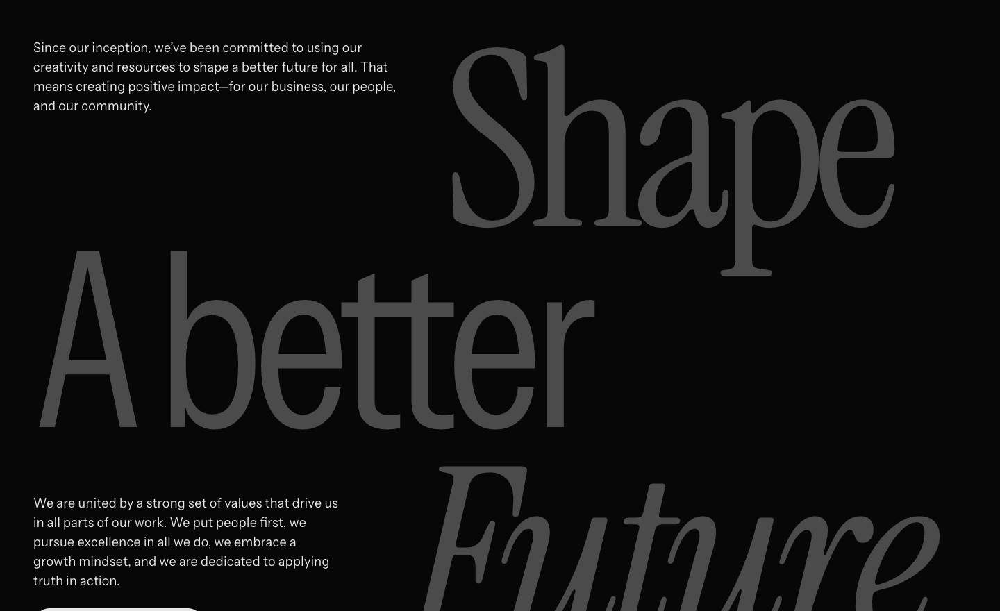
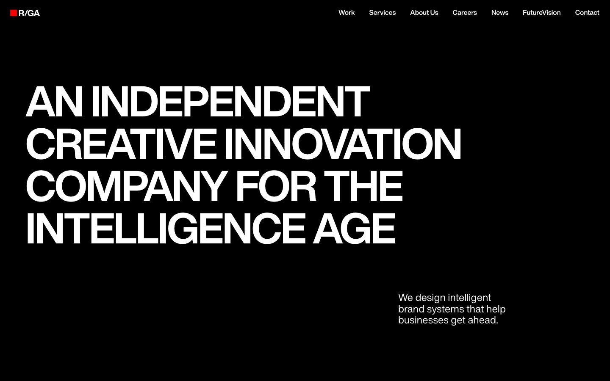
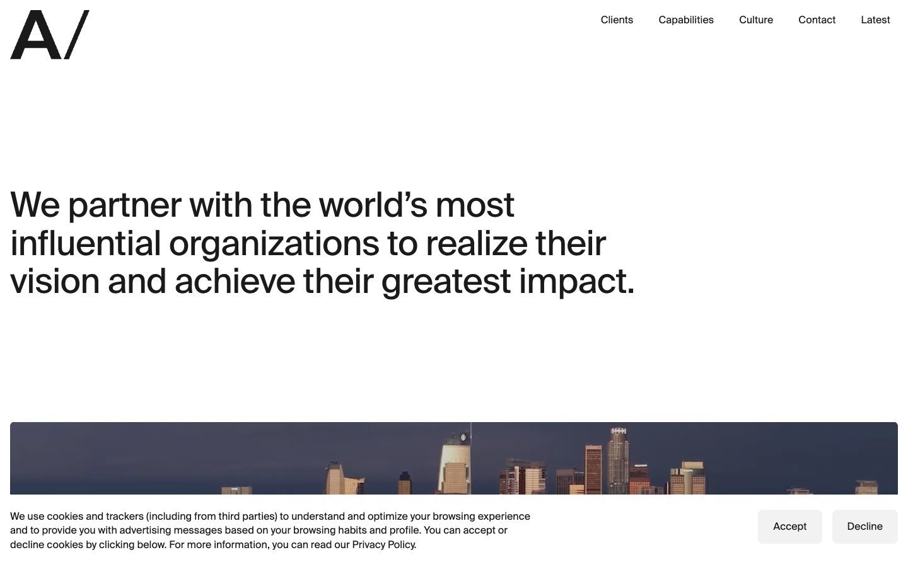

1特大の明朝を段違いに。最後の行だけ斜めに参考：Instrument「Shape / A better / Future.」

黒地に灰色の特大セリフを右・左・右と段違いに置き、最後の語だけ斜体。小さな本文はその間に。
→ 一文を3行に分け、右・左・右に置く。大事な語だけ明るく。スクロールで行が左右逆に少し動く。
21つの文を、明るい前半と灰色の後半に分ける参考：Linear「A new species of product tool. Purpose-built…」
黒地に1つの段落。前半の一文だけ白、続きは灰色で、同じ大きさのまま強弱をつける。
→ 問いは前半を白、後半を灰色。06は逆に、前半の「短期的な個別最適ではなく、」を灰色、「長期的な全体最適へ。」を白に。
では、シグナルとノイズを見極める要素はどこに存在するのでしょうか。
3極太の大きな文字を、左寄せで詰めて組む参考：R/GA「AN INDEPENDENT CREATIVE INNOVATION COMPANY…」

黒地に、極太の文字を画面の左に詰めて大きく組む。行間は狭く、小さな色の四角を1つだけ添える。
→ 文の頭に水色の四角を1つ。
では、シグナルとノイズを見極める要素はどこに存在するのでしょうか。
QUESTION
短期的な個別最適ではなく、長期的な全体最適へ。
LONG-TERM
4生成りの地の真ん中に、明朝の一文を小さく品よく参考：Collins「Rewrite your worth.」

生成りの地の中央に、セリフ体の一文だけ。周りは大きく空ける。
→ 大事な語にだけ、読み終わる頃に細い下線がすっと引かれる。
では、シグナルとノイズを見極める要素は
どこに存在するのでしょうか。
LONG-TERM短期的な個別最適ではなく、
長期的な全体最適へ。
5白地に大きな文章を左寄せで。余白を広く参考：AREA 17「We partner with the world's most influential organizations…」

白地の左に大きめの文章を置き、上下左右の余白をたっぷり取る。小さなラベルと細い線だけ。
では、シグナルとノイズを見極める要素はどこに存在するのでしょうか。
Long-term短期的な個別最適ではなく、長期的な全体最適へ。